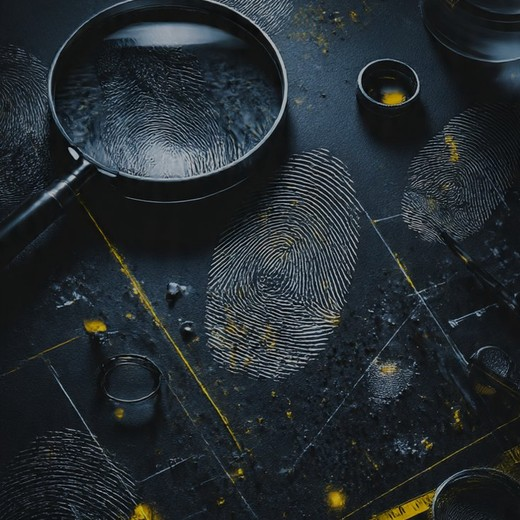
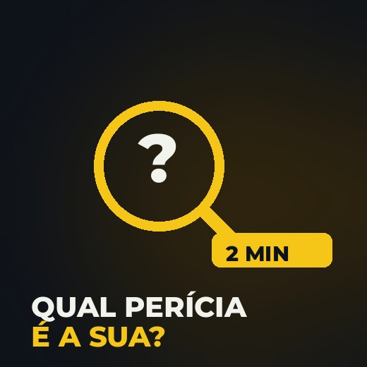
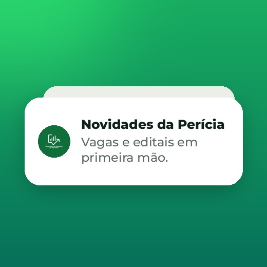

@pericia.dissecadordequestoes
Perito com Método · Dissecando Questões
Você sabe a matéria. Falta método pra virar perito. Comece por aqui.
A preparação mais completa
Dossiê Perícia
Plataforma, cronograma que se adapta e acompanhamento do Prof. Manoel.

Diagnóstico em 2 min
Qual perícia é a sua?
5 perguntas rápidas e você descobre pra qual concurso de perícia a sua formação tem mais chance.

Grupo no WhatsApp
Grupo da Perícia
Vagas, editais e movimentações da perícia criminal em primeira mão.

Atendimento no WhatsApp
Fale com a equipe
Tire suas dúvidas e descubra o melhor caminho até a perícia.